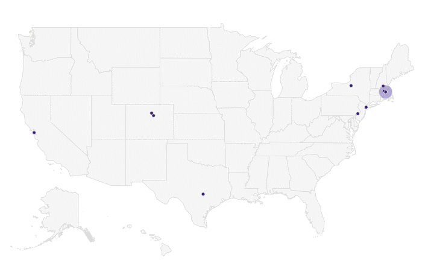
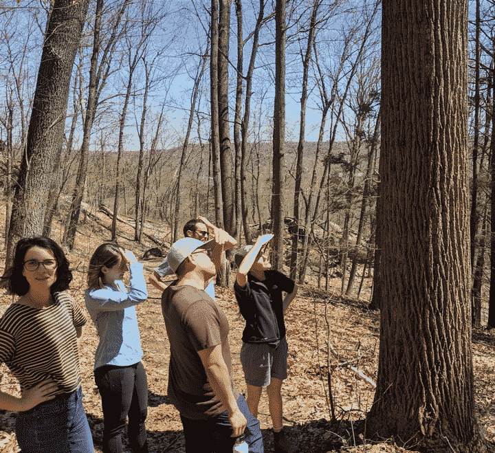
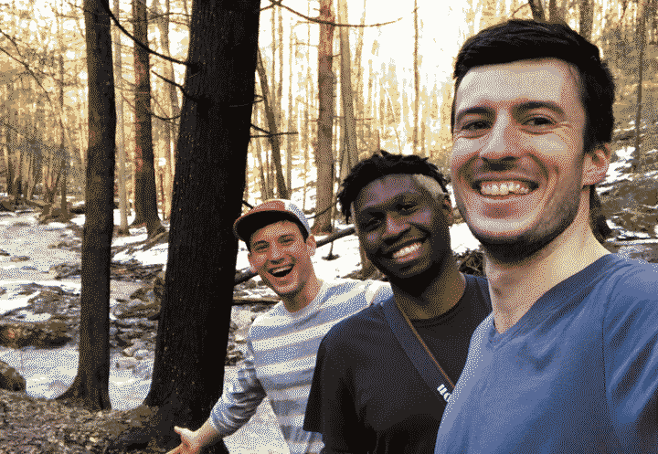
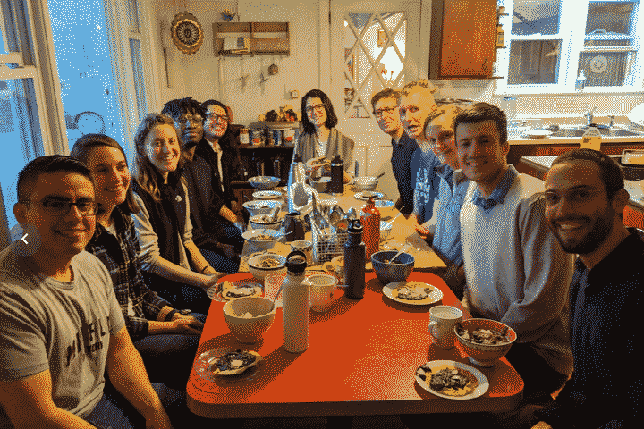

A reflection of how we work and grow as a fully remote team
{kind=link}
There are plenty of lists of tools for remote teams, and some fantastic examples of documented processes (ex {^Gitlab}). I'm spending some time this weekend writing about how we work at Upstream Tech. The tools, yes, but also the fabric, connections and culture of our remote work.
A lot has changed since the write-up I did 2 years ago. We've gone from 3 employees to almost 20! With team growth like that, it's probably obvious that we had to adjust and refine our processes to enable collaboration, productivity, and well-being.
The content include excerpts from the documents we keep internally to track our processes and onboard new folks joining the team.
Why Remote?
A raised eyebrow is the most common response I get when I tell someone our team is “remote, yes entirely. There is no office. Spread across the whole country, 4 time zones.” The amplitude of the raised eyebrow is typically related to the industry that person inhabits. “How do you get anything done?” they usually ask.
 This is where we are, as of 2020. With the majority in the Northeast.
{kind=link}
But first, before we dive into the "what," allow me to outline the "why" of remote work. For us, the most important reasons are:
- A broad talent pool, which when combined with other hiring practices and team culture can result in a more diverse team. This is the most exciting element of remote work for me. When you're not tied to a single city (or a subset of neighborhoods in a single city) you can tap into a wealth of perspectives, backgrounds, and identities that are wonderfully representative of what "tech" could be, if it were not so centralized in a few expensive cities.
- Flexibility to accommodate a variety of lifestyles and workstyles. Some folks prefer a midday break or exercise, others need to drop off/pick up children from daycare. And while this has always been feasible in the office - it's much easier to walk away from a computer monitor than it is to slink out of a bustling office.
- No commute; a lot of time is added to your day by this simple fact. You get to do with this newfound time what you please! What would be my commute is now a morning run through the Middlesex Fells.
- Fewer distractions and increased productivity. A Stanford study showed a "massive, massive improvement in performance — a 13% improvement in performance from people working at home." [{^https://tedx.stanford.edu/lineup/nicholas-bloom}]
- Transparency by default. Because collaboration and communication flows through written processes, it's possible to design systems that are transparent first. This eliminates hallway decisions and information silos, builds trust, and creates a more cohesive team.
- Retention of employees. We've had a quarter of our team encounter life events that have led them to move - and not just down the road, but to new states and cities. This massive change is usually job-ending, but for us it was barely noticeable aside from a changing video background and the potential changed timezone.
- Less expensive! The cost of commercial space is wild, especially in major metropolitan areas that have the talent pools necessary for collocated team growth.
- One thing I've found especially challenging, through my own experiences and observing other companies, is organizing hybrid remote/in-person teams. When some team members are co-located and others are remote, it is very difficult to maintain transparency through communication and create inclusive decision-making processes. This can be avoided with rigorous design of meetings/decisions/processes and a condemnation for hallway brainstorming and decisions. But it can be tough, especially for those remote employees.
- Digital work begets digital collaboration. Many types of work do not jive with computer-centric collaboration. Certain hardware design, for instance. Physical design. These things require hands-on work from the whole team in a shared space.
- Fast growth. And not our 0 to 20 in 4 years growth (which admittedly felt VERY FAST), but I'm talking 0 to 100 in a year growth. Some companies like GitLab and InVision have managed this, so {^it isn't impossible} but it takes a lot of conscious design and a rigorous and thoughtful interviewing process.
Organization
The composition of our team is two-thirds engineering and data science (we call it Product), and one-third business development and marketing (we call this Growth & Partnerships / GP). The former, inhabiting the digital world by default, lends itself more to remote collaboration.
Although Product and GP roles respectively have different responsibilities, which result in different workflows, tools and processes, we try as much as possible to keep the majority of the tools and processes common across our organization. Why? Well, product development doesn't operate in a bubble. If anything, it is informed first and foremost by the conversations had with external parties: customers, collaborators, and partners. More often than not, we include folks from the product team on our calls with prospective and active relationships.
The second and more important reason is because we are one team! To lack cohesion in our day-to-day processes, especially as a remote team, will result in a lack of cohesion as a team. Dividing lines in process are akin to cracks in a team's foundation.
We organize ourselves into Product Teams, one for each active product effort. For example, as of February 2020, we have the following product teams:
- Lens
- HydroForecast
- AgTrends
Getting Together
 Abby is our resident tree expert; in no small part because she graduated from the Yale School of Forestry. She teaches us about trees and our plants, both when we are together and when we are remote.
{kind=link}
The most obvious trade-off that's pointed to by team in-person is that "sometimes you just have to get in a room and hash stuff out." We agree! And it isn't mutually exclusive with working remotely most of the time.
 When we were a wee company, hiking in the Berkshires. February 2018.
{kind=link}
Twice a year we gather as a team. Two folks lead the organization of the gathering: wrangling a date, picking a location, and soliciting topics for an agenda (although it is left partially unstructured so that we can hang out). Most of the time is spent cooking, outdoors, discussing goals, and brainstorming.
We select a location with the following criteria:
- Minimizes flights and maximizes our ability to carpool (because, carbon emissions...)
- Has plenty of space to cook, hangout and for everyone to have personal space (this has been a challenge in the past when we were trying to be very lean, but I think we've addressed it in our upcoming gathering)
- Is nearby natural areas for solid outdoor time
{kind=link}
We typically convene for 3-4 weekdays, which has been enough time to have downtime while still being possible for folks who have obligations back at home to join. And to be sensitive to such things, we don't require that folks come to every gathering; only that they do when it works well with their personal life schedule.
Topics and activities in the past have included:
- Brainstorming how an existing product can help a new market
- Reflecting on a program we did in the preceding 6 months (like our Accelerator program for NGOs)
- A book swap!
- "Power mapping" -- where do we see the product in 6 months to a year, what kind of impact do we want to have, who else do we need to engage to achieve those goals, who has the power/money to spark change in markets we want to work in - Lightning talk on "how to Kanban"
- Reflections on our processes and communication (meta!)
{kind=link}
 Kevin's Mole is a primary fixture of our gatherings. This time in Pawling, NY. April 2019.
{kind=link}
 The latest gathering. September 2019.
The latest gathering. September 2019.
1-on-1s
Getting together in-person is an important facet of building cohesion, trust, and empathy within a team. But for the time where a team is remote, regular 1-on-1 meetings help create space to chat about non-tactical work stuff, or perhaps not work stuff at all. Some opt to do them over the phone while going on a walk, others do it over video. Recent topics for me have ranged from talking about getting solar panels, to a great book I read recently, to lamenting how easy it is to procrastinate when taking an online self-paced course. Sometimes folks want to talk about high level work strategy, but most of the time it's like catching up with a friend.
I choose to do them weekly with the folks I work closest with and less frequently across the team.
Cross-Org Tools
Before I start talking about our workflows and processes, it's worth briefly outlining our tools:
Google Drive and GSuite
We use Google Drive for all of our internal and external documents. Internally, that includes documents for planning, brainstorms, call notes, pricing spreadsheets, etc. Externally: proposals, conference presentations, report deliverables, and more. We invested time to translate our design system to a set of professional document templates for anything external. We have a folder structure on a Team Drive that helps keep things organized.
We use Google Meet (part of GSuite) to do meetings, both internal and external. If the groups gets larger than about 10 people, we use Zoom.
Slack
Love it or hate it, it's good for discussing tactical stuff (#upstream-[product]), sharing resources like articles (#upstream-articles), notifying the team to feature releases (#upstream-release-notes), and generally sharing life stuff (#upstream-watercooler).
#upstream-watercooler has been an awesome place to share stuff that doesn't fit elsewhere: book recommendations, questions about plants for our resident botany expert Abby, photos from a vacation, progress of knitting projects... you get the idea.
Slack has its issues, but with careful tuning of the notifications (Notifications → "Notify me about..." → "Direct messages, mentions & keywords") and culling of sidebar madness ( Sidebar → Appearance → "Unreads and starred conversations") is imperative. Setting "Do Not Disturb" during focused blocks during the workday has been a technique that has worked well for our team to do deep dive writing, proposal preparation, and coding.
We also urge folks to first consider posting messages in public rooms if they have the potential to benefit other folks on the teams. For that reason, we created #upstream-qs and #upstream-eng-qs for general and engineering questions respectively. It has helped create a culture unafraid to ask questions. In my early jobs, I felt nervous to ask a question that made me look inexperienced. I make a point to ask all of my questions in these rooms as well, so that everyone, from Alden to our interns, feel comfortable asking anything.
We have one room worth noting called #upstream-intentions. Every morning, folks post “intentions” for the day. As the day goes on, we edit our intentions to show that something is done.
{kind=link}
It’s a very simple, low friction to-do list that drive self-accountability for the day, makes progress transparent, and helps call out cross-team dependencies first thing in the morning.
GitLab
As described on {^GitLab}:
Woah, that's quite a bit of functionality. When remote teams say "ah yes, we use GitLab" the thing I wonder is "how do you use it?" What are the processes in place to keep things moving?GitLab is a web-based DevOps lifecycle tool that provides a Git-repository manager providing wiki, issue-tracking and CI/CD pipeline[7] features, using an open-source license, developed by GitLab Inc.
{kind=link}
Below is a combination of terminology and processes we use around GitLab's issue tracking system, which we use as the primary location of our current, imminent, and near future tasks across teams:
- An issue is a unit of work that, when complete, results in some value from the customer’s perspective.
- A milestone is a grouping of issues that are grouped together by a unit of customer value. For example, if a new feature requires us to first purchase data from a vendor, then integrate that data into the backend, then build a graph in the frontend, the three issues can be created and assigned to the best product teammate for the job, and then attributed to a common milestone that describes the issues’ interdependence and shared customer value.
- Each product team should have their own product label. A label is a tag that can be added to issues. It’s very helpful to have one per-product so that product teammates can quickly filter down to the necessary issues relevant to their work on a given week.
- GitLab issues* are tracked in several *columns.
15Five
Being a remote team makes it all the more important to regularly take the pulse of the team. Frankly, anxiety, uncertainty, excitement, and high-fiving isn't as recognizable over a screen as they are in person. We use 15Five to do two things: weekly pulse checks and biannual 360 review cycles.
The pulse-checks happen every Friday. We ask that each teammate takes 15 minutes to answer 5 questions. It also provides an opportunity to call out other teammates for being awesome. The virtual answer to an in-person high-five.
Product Tools
Figma
A small cohort of us use Figma to produce design, although we often opt to go from paper sketches straight to code. Figma has been a useful resource too when conducting market research: we create mocks of future functionality to gather feedback and spark conversation.
Intercom
We use intercom to interact with the customers on our website. We don't yet do anything particularly sophisticated outside of some automated emails, some lightweight help documentation, and triaging of inbound questions via a chat widget.
Growth and Partnership Tools
Streak
{^Stream} is a lightweight CRM that lives inside of Gmail to track pipelines and processes related to sales activities. It's fantastic because it doesn't require cumbersome BCC-ing to share emails related to the CRM entities - emails can be shared by default, and are properly associated with the CRM entities automatically based on domain name or email address. We use a Task feature for follow-ups (since they'd otherwise clog up our Kanban board in GitLab). We make sure all of these tasks have a deadline, because we all know how easy it is to kick a "follow up" can down the road. # Everyone's Responsibilities
We have three responsibilities we ask everyone on the team to adhere to
- Keep customers happy and excited! By forming real relationships, building high quality products, by listening to customers, and by keeping our system stable.
- Keep your work visible; and keep tracking tools up-to-date.
- Self-organization and autonomy: if you don’t have something to work on, look for an open issue with your team’s label. If you’re not sure, ask the DRIs.
DRIs
Each team has two Directly Responsible Individuals, one for Product and one for G&P. The responsibility has overlaps in some regards, especially when it comes to translating customer feedback into product decisions. In other ways, we see a distinct separation in the responsibilities of the DRIs. The DRI role is not a "manager" role nor is it an "official" or permanent one. The DRI role is a leadership role. It is about pushing the project forward and making sure nothing falls through the cracks. Being a DRI doesn't mean I have to do all of the work, instead I should be resourceful to delegate and work with the right people on the team that will help me deliver the best result.
Shared responsibilities include:
- Turning customer feedback into product decisions. This is the most shared responsibility, since the GP DRI is on the front-line of correspondence with the customer (and Product team members are often included in those communications/emails to bring technical perspective). One area we as a team haven't quite figured out is a great process for how customer feedback is stored and translated into product and feature decisions. We have a few processes we are experimenting with, but if anyone reading this has suggestions, send them our way!
- Maintaining the {^1/3/6}.
- Fielding and managing business partnerships related to the business, with the Product DRI being responsible for any additional technical or product work due to the partnership, and the GP DRI responsible for all other aspects of the partnership.
- Facilitating feature releases for the product. We have a "feature development checklist" with recommended steps to follow when creating new releases of a product. This is important with machine learning models, especially with our forecasting products, as roll-out has to be managed in close communication with our customers.
Planning and Coordination
Daily Sync
One aspect of office life is that after the commute, you inhabit the same space as your coworkers. You chat while coffee trickles into the already-emptied carafe. Remote work doesn't afford the same sense of "showing up" and "seeing everyone arrive at their desks." We add a daily touchpoint of our own in the form of a daily, brief meeting at 11:30 am ET. We all hop into Zoom (we use zoom here because it allows the "gallery view," where you get to see everyone's face at once) and run through
 A rare gif of a morning sync from late 2018
A rare gif of a morning sync from late 2018
- announcements, such as vacations, things to celebrate, etc;
- weekly themes organized by product team, reiterating "what Friday looks like" and our progress;
- a "potpourri" section where we highlight any work that falls outside a product team's purvue.
1-3-6
One of the more concrete responsibilities of the DRIs is to maintain what we call the 1/3/6, which highlights a product team’s plan for one month, three months, and six months in a decreasing level of detail. The decreasing level of detail allows us to see where we’re going without getting caught up in little planning details for something a few months away (which will probably need to change anyway).These documents serve as a center-point for team syncs, and work moving in the one month category is created as issues in the GitLab backlog.
Product teams have a meeting each week to plan their work for the coming week. Those meetings have nuances across the different teams, but here’s the agenda's gist:
1. Review the GitLab board, filtered with the product team's label. Go through each card and make sure it's in the right place, and make sure there are no cards missing for work in progress. 2. Go to your team’s 1/3/6 month planning doc and look at what your current goal(s) are, what’s in our 1 month plan, adjusting and updating if necessary. 3. Review upcoming customer deliverables/deadlines. 4. Create next week’s weekly goals and update Weekly Themes doc.
Your Turn!
There is a lot to consider when embarking to create and grow a remote team. It won't work for everyone. Some people find energy in physical nearness to their coworkers. Others may not have the autonomy necessary to thrive in a more independent work style. But for those teams that desire flexibility, and are inherently autonomous and asynchronous, I hope this document gives a window into the how and why of remote teams. Why remote work can be a powerful design for a team, especially a software or digital one, and some of the strategic and tactical steps we've taken to implement it successfully. At Upstream Tech, we are still learning a lot - and we will always make time at our in-person gatherings to discuss and adjust our processes and tools. But so far, we've been able use these concepts to scale our team's growth, build technologies for the environment, and counter climate change.
If you have a remote team and want to chat, or if you're looking to create a remote team within your organization, send me a message at {^@marsh}. I'd love to hear about what works well for your team or challenges you've encountered.
Remote work is a big part of what is to come for great teams!